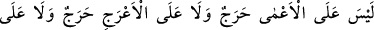
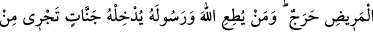
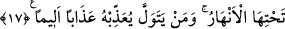

Âyette şuna işâret vardır: Tâat, ibadet, farzlar ve nâfileler noktasından farklı olan
nefisler Allah yolunda savaşmaya veya nefis, şeytan ve dünya ile mücâdele anlamına
gelen cihad-ı ekbere çağrılırlar da, nefsi şehvetlerden alıkoymak, dünyayı ve süslerini
terketmek sûretiyle bu çağrıya icabet ederek, çağrıyı yapana itâat ederek savaşırlarsa
güzel mükâfatı hak ederler. Tâattan ve ibadetten yüz çevirirlerse, Allah onlara dünyada
ve âhirette çekecekleri bir azab verir.
17. Köre vebal yoktur, topala da vebal yoktur, hastaya da vebal yoktur. (Bunlar
savaşa katılmak zorunda değildirler.) Kim Allah’a ve Peygamberine itâat ederse,
Allah onu altından ırmaklar akan cennetlere sokar. Kim de geri kalırsa, onu acı bir
azaba uğratır.
“Köre vebal yoktur,” geri kalanlara va’d edilen cezayı, zayıf ve özür sahiplerinden
kaldırmayı bildiren bir ifâdedir. Gözünü kaybetmiş olan âmâya, gazveye katılmadığı
için bir günah yoktur. Çünkü o kişi, kanatları kesilmiş ve bu sebeple kendisini tutmaya
gelen avcıdan kaçamayan bir kuş gibidir. Teklif, yeterli bir gücün olduğu durumlar için
söz konusudur.
“Topala da vebal yoktur,” ayaklarından birinde veya her ikisinde sürekli bir hastalık
bulunduğu için topala da günah yoktur. Ayakları olmayan kişiden, abdest alırken bile
ayaklarını yıkaması gerekliliği düşerken cihad mükellefiyeti nasıl düşmesin.
“Hastaya da vebal yoktur.” Kuvvetleri olmadığı için hastalara da günah yoktur. Bu
gruplardan herbirinin özel olarak sayılması onlara itibar göstermek ve onların
durumlarına önem vermek ve itina göstermek içindir. Ayrıca ruhsat dâiresini
genişletmek kasdedilmiştir.
Kim Allah’a ve Rasûlüne emir ve nehiyler konusunda, alenî olsun, gizli bir yerde
olsun itâat ederse Allah O’nu altlarından ırmaklar akan cennetlere koyar.
Büyüklerden birisi der ki: Cennetin, cennet olarak isimlendirilmesi, Allah’la senin
aranda bir perde, bir örtü olduğu içindir. Çünkü orası nefislerin isteklerinin bulunduğu
yerdir. Allah sana, seni göstermek istediği zaman, seni şehvetinden alıkor ve şehvetin
perdesini senin gözlerinden indirir. Sen cennette olduğun halde cenneti kaybettin.
Rabbini görmüştün. Senin perden yine senden kaynaklanmaktadır. Kendi güneşine bulut,
yine sensin. Nefsinin gerçeğini anlamaya çalış.
Kim itâatten yüz çevirirse, derdi tükenmeyen, sıkıntı veren bir azaba maruz bırakır.
Onun elemi sona ermez. Bu, ye’se düşüren bir azaptır. Allah’ın emrine muhalefet etmek
yüzünden onun cemâlini görme servetinden uzak kalacak, Hz. Peygamberin (s.a.) emrine